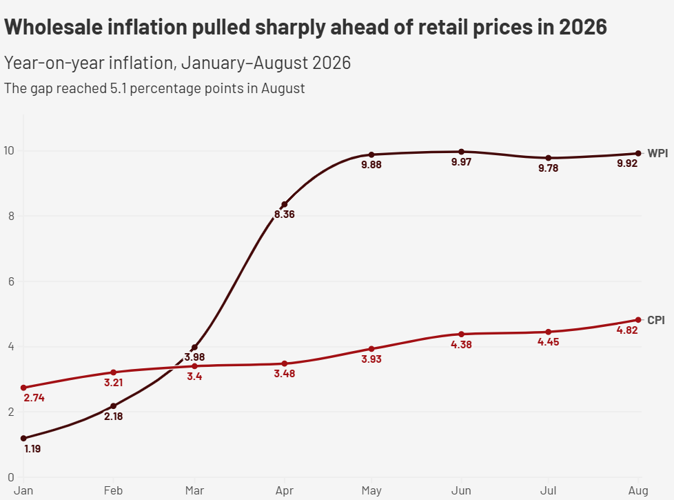

India’s Manufacturing Generalises
Wholesale Price Pressures Beyond Fuel
India’s wholesale inflation stayed near 10% in August, but data shows price pressures spreading through manufacturing instead of remaining concentrated in the energy shock alone.
India’s wholesale inflation stayed near 10% in August, but data shows price pressures spreading through manufacturing instead of remaining concentrated in the energy shock alone.
The Wholesale Price Index rose to 9.92% in August from 9.78% in July, extending a near-double-digit run that began earlier this year, according to official government data.
Manufactured products hold 63.13% of the WPI basket, compared with 14.11% for fuel and power. That makes manufacturing central to the headline index despite slower annual price growth.
“Mineral Oils (containing Petroleum Products), Food Articles, Manufacture of Food Products, Manufacture of Basic Metals” were major drivers of August inflation, the Commerce and Industry Ministry said.
The statement appeared in the ministry’s WPI press release dated September 14, 2026, which listed several energy, food and manufacturing categories among the main drivers.
Fuel and power rose 22.93% year-on-year, while manufactured products rose 8.37%. But manufacturing carries more than four times fuel’s weight in the WPI basket.
That difference matters because wholesale prices sit earlier in the supply chain. Sustained increases can affect procurement costs, inventories and pricing decisions before reaching consumers.
The main finding
Manufacturing contributes more weighted pressure than fuel
Fuel prices rose much faster in August, but manufacturing has a far larger share of the wholesale-price basket.

The result changes the reading of August inflation. Fuel delivered the sharpest price increase, but manufacturing generated greater weighted pressure because it represents 63.13% of the basket.
Consumer prices rose 4.82% in August, leaving wholesale inflation 5.10 percentage points higher, although the two indices measure different baskets and should not be treated as identical.
The gap does not directly measure corporate margins. It does show that wholesale prices are currently moving much faster than prices measured at the consumer end.
The relative picture
Wholesale inflation pulled sharply ahead of retail prices in 2026
Wholesale and consumer inflation moved relatively close together early in the year before WPI accelerated sharply from April.

The divergence began in April, when wholesale inflation reached 8.36% while consumer inflation was 3.48%. By August, the gap remained above five percentage points.
The WPI increase is also broader than the energy shock. Seven manufacturing groups recorded double-digit inflation in August, spanning chemicals, metals, textiles and several other industries.
Together, those groups account for 26.30% of the entire WPI basket. Their size gives the manufacturing increase a much wider footprint than the fastest-rising energy categories alone.
The deeper finding
Manufacturing price inflation stayed elevated through the summer
The same manufacturing groups remained at elevated inflation rates across several months, showing that the August reading was not simply a one-month spike.

Chemicals stayed above 13% throughout the period, while other manufacturing remained above 20%. Textiles and electrical equipment moved into double-digit inflation and stayed there.
The pressure extends beyond these seven groups. Commodities accounting for about 84.8% of the WPI basket recorded higher prices than a year earlier, according to calculations from the monthly series.
That breadth makes the latest WPI reading different from a narrow commodity shock. Energy remains important, but manufacturers across several industries are also recording sustained price increases.
Within energy, the pressure is much more concentrated. Mineral oils rose 38.48%, while crude petroleum and natural gas increased 34.41% year-on-year in August.
Coal and lignite rose only 1.57%, while electricity prices fell 1.73%. The energy increase is therefore heavily linked to oil and gas rather than broad-based power costs.
The government has responded to the energy shock. In a March 27, 2026 Petroleum Ministry release, it said excise duty on petrol and diesel had been reduced by Rs 10 per litre.
The ministry said the move followed a steep rise in international crude prices and was intended to limit the domestic impact of higher global energy costs.
In a June 2026 inter-ministerial briefing, the Petroleum Ministry also said refineries were operating at high capacity while officials worked to secure petrochemical feedstock.
What the data shows
Manufacturing price pressure is broad and persistent. Seven groups were above 10% inflation in August, while their combined basket weight reached 26.30%.
At the same time, manufacturing accounts for 63.13% of WPI, making moderate price increases across the sector significant for the headline index.
What the data does not prove
The WPI data cannot establish whether manufacturers are absorbing higher costs, passing them to customers or benefiting from wider margins.
WPI and CPI also measure different baskets, so their gap is a relative indicator rather than a direct measure of business profitability.
The new producer-price series offers another way to examine that transmission. Manufacturing input prices fell about 1.6% between July and August, while output prices rose about 0.8%.
The government began publishing producer-price measures in 2026 to separate input and output movements. The short history means the series remains an emerging indicator.
If output prices continue rising while input pressures ease, the data could reveal a different explanation for persistent manufacturing inflation. If both move together, higher input costs may be the stronger factor.
The coming months will show whether manufacturing inflation eases with input prices or remains elevated, determining how much of today’s wholesale pressure eventually reaches businesses and consumers.
About the data
Methodology and limitations
The analysis uses the monthly Wholesale Price Index series published by the Office of the Economic Adviser, DPIIT, covering April 2023 through August 2026. Year-on-year inflation is calculated by comparing each monthly index with the corresponding month a year earlier.
The manufacturing analysis uses the Group-level WPI classification. Weighted pressure is calculated as the WPI basket weight multiplied by the year-on-year change in the relevant group.
The CPI comparison uses the current 2024=100 All-India Combined CPI series published by MoSPI. WPI and CPI have different baskets, classifications and weights, so their movements are used to show relative price pressure rather than identical measures of inflation.